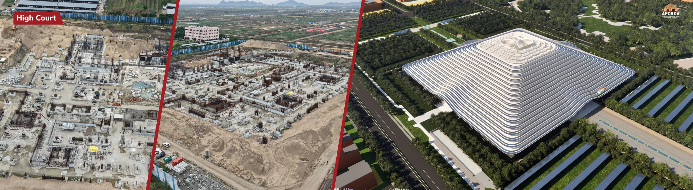
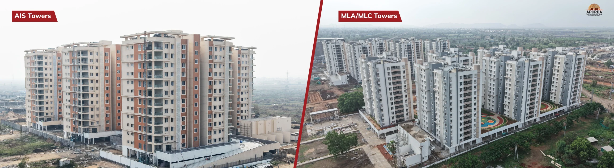
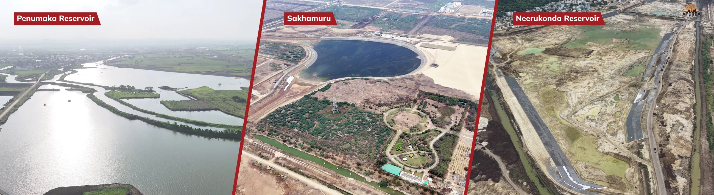

The master-planned capital city area.
World Bank · Dec 2024 ↗అమరావతి ఇన్ఫ్రా ప్రాజెక్ట్స్
APCRDA reference imagery · photographs & proposed visualisations01 / 04
CITY BRIEF
Infrastructure. Institutions. Connectivity. See the evidence behind Amaravati’s next chapter.
Read the research ↗01 / WHAT WE DOYour plans.
Your plans.
Our ground-level expertise.
From finding the right land to bringing a project to life, start with a direct conversation.
01
Open plots & ventures
Plot and venture enquiries, location shortlisting and flat enquiries suited to your requirements.
Discuss your requirements ↗02Construction & development
Explore your development plans, construction scope, site requirements and the next practical steps.
Talk through your project ↗03Real estate agency
Local support for buyers, sellers and landowners, with property conversations in Telugu or English.
Speak to a local expert ↗02 / THE AMARAVATI OPPORTUNITYA compelling story.
A compelling story.
Built on more than promise.
A planned capital, institutional finance and regional connections make Amaravati worth understanding. Here is what official sources actually say.
World Bank + ADB support for the first-phase programme; rounded total.
$800m + $788.8m ↗Errupalem–Namburu line via Amaravati, approved in October 2024.
Ministry of Railways ↗Population the 2050 city master plan is designed to accommodate; not current population.
World Bank · Master plan ↗THE FOUNDATION OF THE FIRST PHASE*Calculated balance from the published $1.78bn programme total; rounded. Development finance is not a measure of property appreciation.Source & calculation notes ↗
Where the programme finance comes from.
US$ million · $1,780m first-phase government programme
World Bank$800m
Asian Development Bank$788.8m
Remaining programme financing*≈$191.2m
A planned urban framework
A city-scale plan offers context for land use, roads and public infrastructure. Check the specific plot’s zoning.
Infrastructure with institutional backing
The financed programme covers urban systems, climate resilience and governance. Delivery timelines still matter.
A connected regional setting
Amaravati sits within the broader Vijayawada–Guntur region. Compare actual access and amenities on a site visit.
03 / EXPLORE THE REGIONEvery location
Every location
has a different story.
Start with the map. Then explore land-use records, access, flood exposure and plot-specific documentation with local support.
REGIONAL CONTEXT · NOT A PLOT OR SURVEY MAP
CHOOSE YOUR AREA OF INTEREST
Thullur
Explore the wider capital-city setting. Verify the individual plot’s land-use classification, approach road and sanctioned layout before proceeding.
Official village layout records ↗Model a scenario for Thullur ↗Area selection changes the context only. It does not imply available inventory, approved ventures or a local return forecast.04 / KNOW YOUR NUMBERSLess guesswork.
Less guesswork.
A clearer investment picture.
Explore what different assumptions could mean for a property purchase. These are mathematical scenarios—not historical Amaravati growth rates or promised returns.
MODELLED NET RESALE PROCEEDS₹32.79 lakh
ILLUSTRATIVE
NOT A FORECAST
NOT A FORECAST
Total initial outlay₹27.00 lakh
Modelled net gain / loss₹5.79 lakh
Net total return21.4%
−5% a year0% a year6% selected12% a year
Chart shows gross property value before costs. The summary deducts entry and exit cost assumptions. No verified locality-level historical price series is being presented.
Read the calculation method ↗05 / THE CITY IN VIEWSee the vision.
See the vision.
Understand what’s taking shape.
Official APCRDA imagery pairs construction photographs with proposed designs. It shows the city’s development context, not our own project portfolio.



Visual source: APCRDA official website ↗. Image capture dates are not verified. Designs and construction status may change.
LOCAL
ROOTS.
ROOTS.
14YEARS OF
EXPERIENCE
EXPERIENCE
06 / THE PERSON BEHIND YOUR NEXT STEPVinna Kota
Vinna Kota
Venkateshwara Rao.
“మన ప్రాంతం గురించి తెలిసిన వ్యక్తితో
మీ భవిష్యత్తు గురించి మాట్లాడండి.”
A native of the Amaravati region, Vinna Kota Venkateshwara Rao brings 14 years of experience to property, construction and development conversations. His approach starts with your goals and a practical understanding of the place.
Native local knowledgeతెలుగులో మాట్లాడండిDirect founder access
Speak with the founder ↗07 / INFORMED BEFORE YOU INVESTFollow the evidence.
Research checked · 18 October 2026Follow the evidence.
Ask the next question.
Development milestones
57 km railway connection approvedErrupalem–Namburu via Amaravati · approval, not completion.↗First-phase programme finance publishedWorld Bank and ADB financing supports city development.↗APCRDA lists infrastructure procurementProgramme management and Atmakur infrastructure notices; live status can change.↗BEFORE A PROPERTY DECISION
A stronger decision starts with better questions.
- What do the title chain and encumbrance records show?
- Does the approved layout match this survey and plot number?
- What are the land-use, access and flood-exposure constraints?
- What is the complete cost, including taxes and transaction costs?
- What if delivery takes longer or resale demand is lower?
08 / LET’S TALK ABOUT YOUR PLANSYour next chapter
Your next chapter
starts with a conversation.
Tell us what you’re looking for. Discuss a plot, a flat, construction or a site visit directly with the founder.
+91 83099 82456Amaravati region · Andhra Pradesh
తెలుగు & English
A FEW USEFUL ANSWERS / మీ ప్రశ్నలకు సమాధానాలు
Start with clarity.
What can I enquire about?
Open plots and ventures, flat enquiries, construction and development, real estate agency services and a local site visit. Property availability and project approvals are discussed individually.
Are the returns in the calculator guaranteed?
No. You choose the growth rate, holding period and costs. The calculator shows a mathematical outcome, not a valuation, historical return, recommendation or guaranteed profit.
Can we speak in Telugu?
Yes. You can discuss your requirements in Telugu or English. తెలుగులో నేరుగా మాట్లాడండి.
Are these city projects being built by Amaravathi Infra Projects?
No. The city imagery and infrastructure data are attributed to APCRDA and other official sources. They illustrate regional development, not our own completed projects or government affiliation.